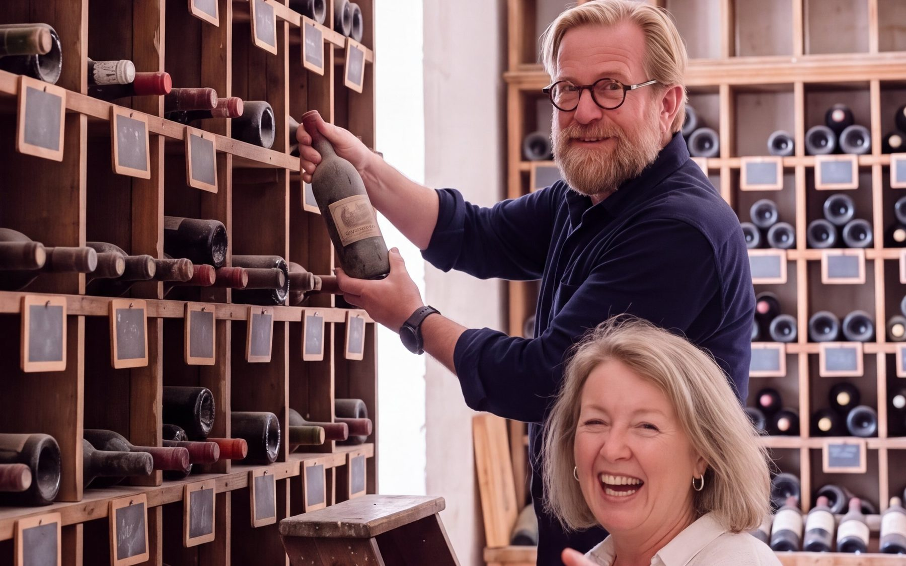

Offrir le vin de son année : anniversaire, mariage, fête des pères
Une bouteille de l’année de naissance, de mariage ou de rencontre : peu de cadeaux racontent autant d’histoire. Encore faut-il trouver le bon millésime, et surtout une bouteille qui sera bonne le jour où on l’ouvrira.

Pourquoi offrir le vin de son année ?
Le millésime, c’est l’année de la vendange. Une année chaude, une année pluvieuse, un printemps gelé : chaque vin garde la trace du climat qui l’a vu naître. Offrir le vin d’une année, c’est offrir un morceau de cette année-là, celle d’une naissance, d’une rencontre ou d’un mariage.
C’est aussi un cadeau qui se partage : on l’ouvre ensemble, le jour venu, en racontant ce qui s’est passé cette année-là.
Trois questions avant de choisir
1. Le vin est-il encore bon ?
Tous les vins ne vieillissent pas. Un vin fait pour être bu jeune ne sera plus à son meilleur trente ans plus tard. Pour un millésime ancien, choisissez un vin de garde, comme un bordeaux rouge structuré, issu d’un château qui sait faire vieillir ses vins.
2. A-t-il été bien conservé ?
Un vin ancien n’est bon que s’il a été bien gardé : couché, à l’abri de la lumière, à une température stable d’environ 12 °C, dans un lieu un peu humide et sans vibrations. Une bouteille restée au château depuis sa mise en bouteille offre la meilleure garantie.
C’est le choix de la famille Miailhe : à Coufran et à Verdignan, les bouteilles vieillissent au château, dans un local climatisé. Depuis le millésime 2005, chacune porte un numéro de lot gravé.
3. Sera-t-il prêt le jour venu ?
Pour un anniversaire dans quelques semaines, choisissez un vin prêt à boire. Pour une naissance, on offre plutôt le millésime de l’année, à garder couché jusqu’à une grande occasion : un vin de garde, structuré, comme Château Verdignan, est fait pour cela.

Le vin de votre année, dans la cave de la famille
Dans la boutique de la famille, il suffit de choisir une année : la cave dit ce qu’elle a gardé pour vous, à Coufran, à Verdignan et à Soudars. Selon les années, les millésimes disponibles remontent jusqu’en 1982. Chaque vin a sa fiche, avec ses arômes et sa durée de garde, pour savoir s’il est prêt aujourd’hui ou s’il peut encore attendre.
Pour la fête des pères : le coffret des trois générations
La fête des pères tombe le troisième dimanche de juin, la fête des grands-pères le premier dimanche d’octobre. Pour l’une comme pour l’autre, la famille Miailhe propose le coffret des trois générations :
- une bouteille de Coufran, le vin du grand-père ;
- une bouteille de Verdignan, le vin du père ;
- une bouteille de Soudars, le vin du fils ;
- une dédicace inscrite sur le coffret : « Pour mon père », « Pour Papi », ou les mots de votre choix.
Trois vins, trois caractères, et une histoire de transmission qui ressemble à celle de toutes les familles.
Quelques idées selon l’occasion
- Un anniversaire : le millésime de naissance, choisi prêt à boire.
- Un mariage : deux bouteilles du même millésime, l’une à ouvrir le jour même, l’autre pour le premier anniversaire.
- Un départ à la retraite : l’année d’entrée dans le métier.
- Pour un amateur : une « verticale », c’est-à-dire plusieurs millésimes d’un même château. On les goûte côte à côte pour comprendre l’effet du temps et des années.
Questions fréquentes
Jusqu’à quelle année peut-on trouver un vin de naissance ?
Cela dépend des châteaux et des stocks. Dans la boutique de la famille Miailhe, les millésimes disponibles remontent, selon les années, jusqu’en 1982.
Comment conserver une bouteille offerte avant de l’ouvrir ?
Couchée, à l’abri de la lumière et des variations de température, idéalement autour de 12 °C. Une bouteille ancienne se transporte doucement, et on la laisse reposer debout quelques heures avant de l’ouvrir pour que le dépôt descende.
Faut-il offrir le vin le plus ancien possible ?
Pas forcément. Un vin très ancien peut être fragile. Mieux vaut un vin à son meilleur, dont l’âge a du sens pour la personne qui le reçoit.
L’abus d’alcool est dangereux pour la santé, à consommer avec modération.